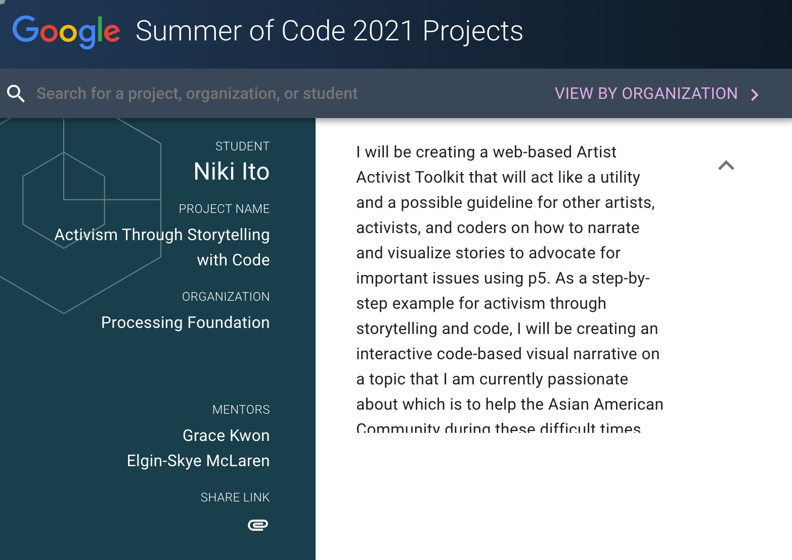

Activism Through Storytelling with Code
This project by Niki Ito was created as a part of the Google Summer of Code 2021. Niki is an artist, designer, and beginner-coder. With guidance from her mentors Elgin-Skye McLaren and Grace Kwon, Niki developed her project titled “Activism Through Storytelling with Code.” The project includes this website “about Me, You, & Us,” a Project Handbook, and a GitHub Repository.